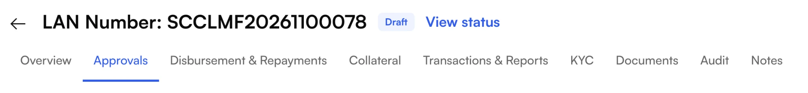
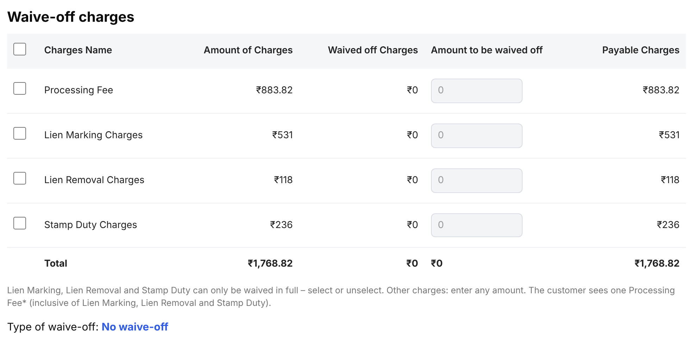
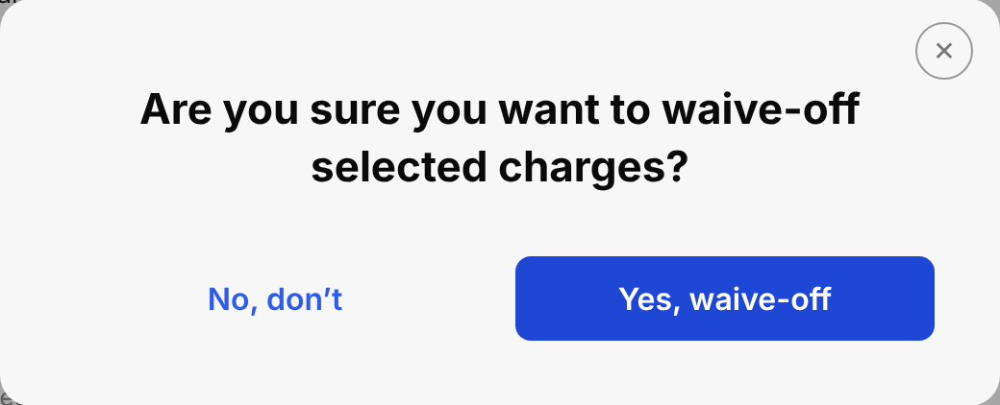
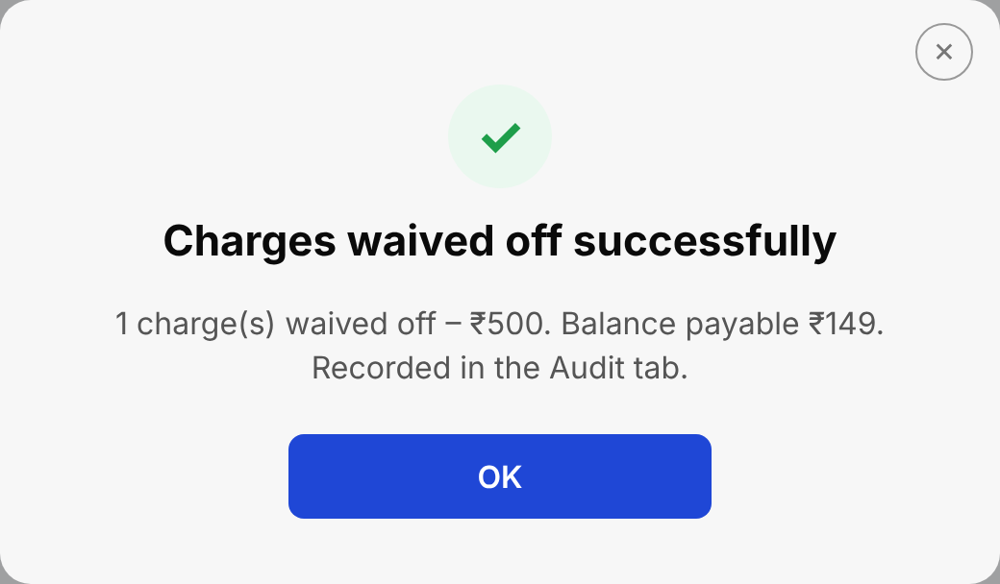
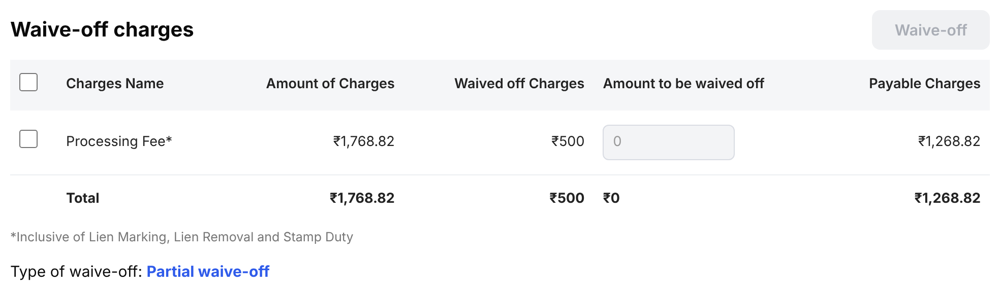
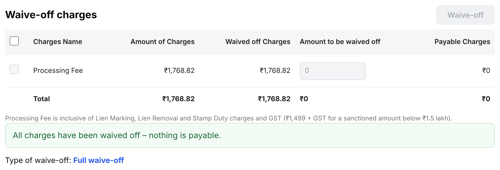
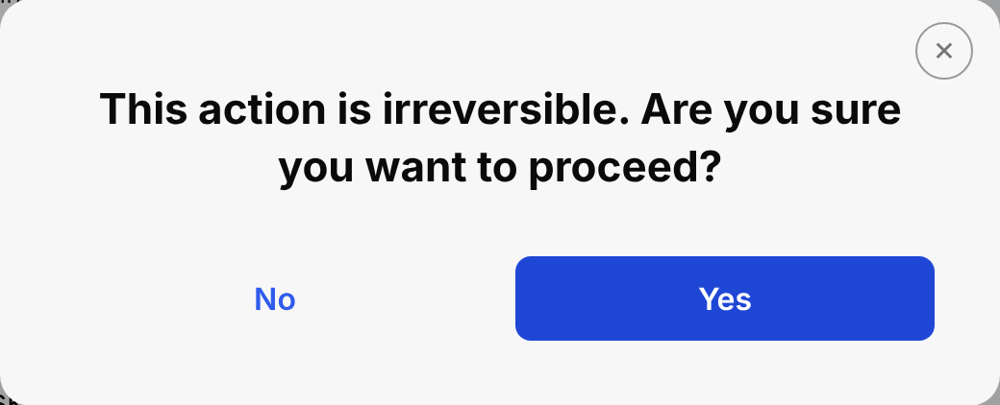
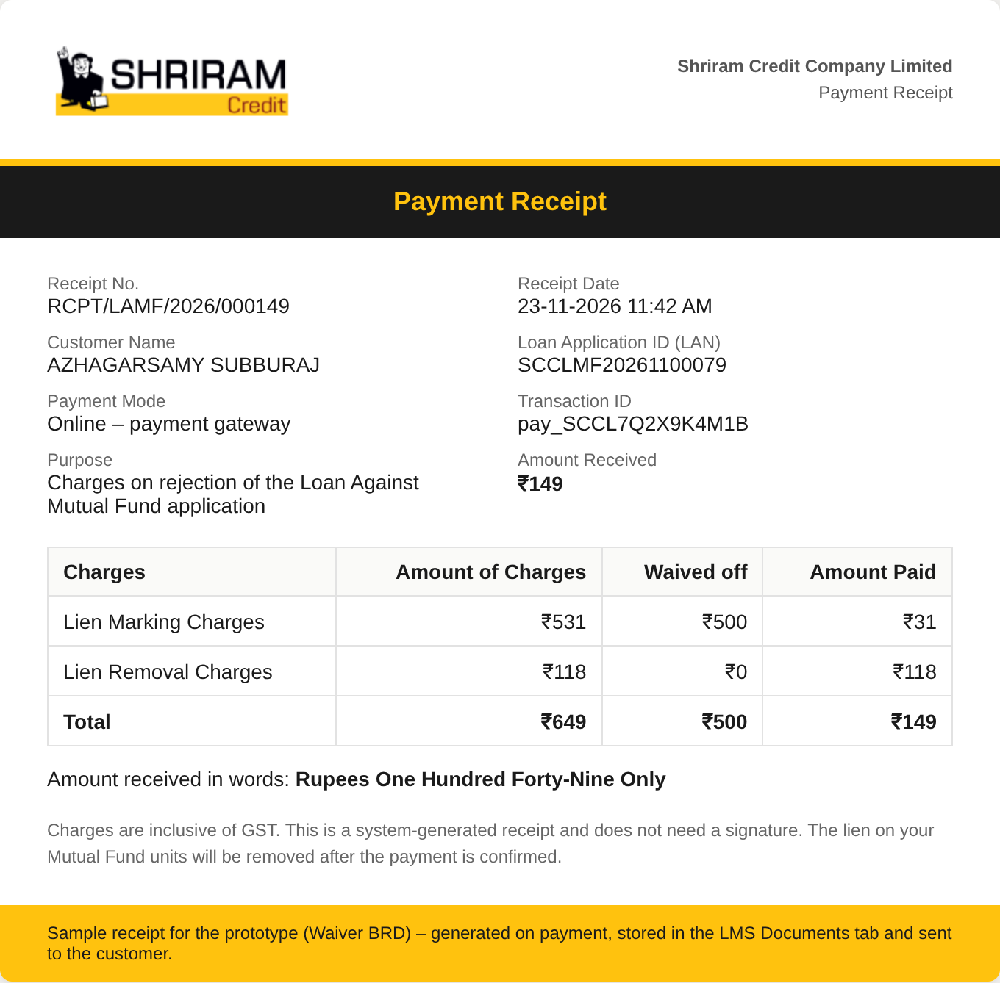

When a customer drops off after pledging the mutual fund units, some charges are already incurred. Today SCCL bears them. This BRD gives OPS one common process to waive these charges fully, partially or not at all, and to collect the balance from the customer before the units are de-pledged.
| Sc. | LAN status | Customer dropped off | Charges applicable | Approvals / Waive-off | What OPS can do | |
|---|---|---|---|---|---|---|
| 1 | DRAFT | Before pledging the mutual funds | None | Not applicable | No action needed. The loan moves to INACTIVE automatically after 30 days. | |
| 2 | DRAFT | After pledging the mutual funds | Lien Marking Charge Lien Removal Charge | Reject | Without Waive-off | Reject the application. Before rejecting, OPS can proceed with Full Waive-off or Partial Waive-off or Without waive-off. |
| With Full Waive-off | ||||||
| With Partial Waive-off | ||||||
| 3 | DRAFT | After the Sanction Letter is generated (units pledged) | Processing Fee* Charge | Reject | Without Waive-off | Reject the application. Before rejecting, OPS can proceed with Full Waive-off or Partial Waive-off or Without waive-off. |
| With Full Waive-off | ||||||
| With Partial Waive-off | ||||||
| 4 | DRAFT | After the Loan Agreement e-Sign (units pledged, Sanction Letter generated and submitted) | Processing Fee* Charge | Reject | Without Waive-off | Reject the application. Before rejecting, OPS can proceed with Full Waive-off or Partial Waive-off or Without waive-off. |
| With Full Waive-off | ||||||
| With Partial Waive-off | ||||||
| 5 | SUBMITTED | After the E-Mandate (units pledged, Sanction Letter submitted, Loan Agreement e-Signed) | Processing Fee* Charge | Approve | Approve the Loan Account Opening (the loan continues), or reject the application. Before rejecting, OPS can proceed with Full Waive-off or Partial Waive-off or Without waive-off. | |
| Reject | Without Waive-off | |||||
| With Full Waive-off | ||||||
| With Partial Waive-off | ||||||
| 6 | ACCOUNT OPENED | After the Loan Account Opening | Processing Fee* Charge | Approve | Without Waive-off | Approve the Loan Lodgement (the loan continues), or reject the application. Before approving or rejecting, OPS can proceed with Full Waive-off or Partial Waive-off or Without waive-off. |
| With Full Waive-off | ||||||
| With Partial Waive-off | ||||||
| Reject | Without Waive-off | |||||
| With Full Waive-off | ||||||
| With Partial Waive-off | ||||||
| 7 | ACTIVE | After the Loan Lodgement (loan account active) | Processing Fee* Charge Bounce Charge Penal Charge Loan Renewal Charge Annual Maintenance Charge (AMC) Bank Swap Charge | Without Waive-off | Waive the charges on the active loan: OPS can proceed with Full Waive-off or Partial Waive-off or Without waive-off. The loan cannot be rejected at this stage. | |
| With Full Waive-off | ||||||
| With Partial Waive-off | ||||||
*Inclusive of Lien Marking, Lien Removal and Stamp Duty

Processing Fee* structure (DISC-355) – exclusive of GST (18% GST is added):
| Sanctioned Amount | Processing Fee*, exclusive of GST | Example |
|---|---|---|
| Below ₹1,50,000 | ₹1,499 (flat) | ₹1,25,000 → ₹1,499 + GST = ₹1,768.82 |
| ₹1,50,000 to ₹10,00,000 | 1% of the sanctioned amount | ₹5,00,000 → ₹5,000 + GST = ₹5,900 |
| Above ₹10,00,000 to ₹50,00,000 | 0.8% of the sanctioned amount | ₹20,00,000 → ₹16,000 + GST = ₹18,880 |
| Above ₹50,00,000 | 0.5% of the sanctioned amount | ₹1,00,00,000 → ₹50,000 + GST = ₹59,000 |
*Inclusive of Lien Marking, Lien Removal and Stamp Duty
The prototype screens use a scenario 3 sample LAN (SCCLMF20261100073) with a sanctioned amount of ₹22,400: Processing Fee* ₹1,499 + GST = ₹1,768.82.
| Column | What it shows |
|---|---|
| Checkbox | Selects one charge. The checkbox in the header selects all the charges. |
| Charges Name | Scenario 2: Lien Marking Charges and Lien Removal Charges. Scenario 3 onwards: Processing Fee* (with the note “*Inclusive of Lien Marking, Lien Removal and Stamp Duty” below the table). |
| Amount of Charges | The charge including GST (for example, Processing Fee* ₹1,768.82). It does not change after a waive-off. |
| Waived off Charges | The amount already waived off for that charge (₹0 until a waive-off is done). It goes up after every waive-off of that charge. |
| Amount to be waived off | 0 by default and not editable. OPS can enter the amount only after selecting the checkbox of that charge; it cannot be more than the balance (Amount of Charges – Waived off Charges). Unselecting the checkbox sets it back to 0. |
| Payable Charges | Amount of Charges – Waived off Charges – Amount to be waived off |
| Total | Total of each column |
| Payable charges | Type of waive-off |
|---|---|
| Same as the original charges (nothing waived) | No waive-off |
| Less than the original charges, but not 0 | Partial waive-off |
| 0 (every charge waived in full) | Full waive-off |










Applies when the Payable Charges are not zero on rejection (partial waive-off or no waive-off). With a full waive-off nothing is payable and the units can be de-pledged right after the rejection. Open the LOS payment screens (prototype).





| Charge | Amount | When it is incurred |
|---|---|---|
| Lien Marking Charge | ₹450 + GST (₹531) | When the mutual fund units are pledged – charged on its own only in scenario 2 (before the Sanction Letter) |
| Lien Removal Charge | ₹100 + GST (₹118) | When the lien is removed – charged on its own only in scenario 2 (before the Sanction Letter) |
| Processing Fee* Charge | One-time fee as per the Processing Fee structure, + GST (sample ₹1,499 + GST = ₹1,768.82) *Inclusive of Lien Marking, Lien Removal and Stamp Duty | From the Sanction Letter generation |
| Bounce Charge | ₹100 + GST (₹118) per instance | Active loan, when an EMI bounces |
| Penal Charge | 36% a year on the unpaid interest / EMI | Active loan, on a delay or default |
| Loan Renewal Charge | ₹999 + GST (₹1,768.82) | Active loan, on renewal |
| Annual Maintenance Charge (AMC) | ₹999 + GST (₹1,768.82) | Active loan, every year |
| Bank Swap Charge | ₹250 + GST (₹295) | Active loan, when the repayment bank account is changed |
What OPS can do: Reject the application. Before rejecting, OPS can proceed with Full Waive-off or Partial Waive-off or Without waive-off.
| Charges Name | Amount of Charges | Waived off Charges | Amount to be waived off | Payable Charges |
|---|---|---|---|---|
| Lien Marking Charge | ₹450 + GST (₹531) | Already waived off (0 at first) | Entered by OPS after selecting the checkbox (0 by default) | Amount of Charges – Waived off Charges – Amount to be waived off |
| Lien Removal Charge | ₹100 + GST (₹118) | Already waived off (0 at first) | Entered by OPS after selecting the checkbox (0 by default) | Amount of Charges – Waived off Charges – Amount to be waived off |
| Outcome | What happens | Customer communication | De-pledge | Accounting entry (UNO) |
|---|---|---|---|---|
| Rejected – no waive-off | OPS rejects without waiving any charge. LAN → REJECTED. | Rejection SMS and mail with the full charges and the payment link. | After the customer pays and Treasury confirms the payment in LMS | Entry for the charges paid, posted in UNO once SCCL receives the payment. |
| Rejected – partial waive-off | OPS waives part of the charges and rejects. LAN → REJECTED. | Rejection SMS and mail with the payable (reduced) charges and the payment link. | After the customer pays and Treasury confirms the payment in LMS | Entry for the amount paid, posted in UNO once SCCL receives the payment. The waived part does not go into UNO. |
| Rejected – full waive-off | OPS waives all the charges and rejects. LAN → REJECTED. | Rejection SMS and mail. No payment link. | Right after the rejection | No entry. The waived charges do not go into UNO. |
What OPS can do: Reject the application. Before rejecting, OPS can proceed with Full Waive-off or Partial Waive-off or Without waive-off.
| Charges Name | Amount of Charges | Waived off Charges | Amount to be waived off | Payable Charges |
|---|---|---|---|---|
| Processing Fee* Charge | One-time fee as per the Processing Fee structure, + GST (sample ₹1,499 + GST = ₹1,768.82) *Inclusive of Lien Marking, Lien Removal and Stamp Duty | Already waived off (0 at first) | Entered by OPS after selecting the checkbox (0 by default) | Amount of Charges – Waived off Charges – Amount to be waived off |
| Outcome | What happens | Customer communication | De-pledge | Accounting entry (UNO) |
|---|---|---|---|---|
| Rejected – no waive-off | OPS rejects without waiving any charge. LAN → REJECTED. | Rejection SMS and mail with the full charges and the payment link. | After the customer pays and Treasury confirms the payment in LMS | Entry for the charges paid, posted in UNO once SCCL receives the payment. |
| Rejected – partial waive-off | OPS waives part of the charges and rejects. LAN → REJECTED. | Rejection SMS and mail with the payable (reduced) charges and the payment link. | After the customer pays and Treasury confirms the payment in LMS | Entry for the amount paid, posted in UNO once SCCL receives the payment. The waived part does not go into UNO. |
| Rejected – full waive-off | OPS waives all the charges and rejects. LAN → REJECTED. | Rejection SMS and mail. No payment link. | Right after the rejection | No entry. The waived charges do not go into UNO. |
What OPS can do: Reject the application. Before rejecting, OPS can proceed with Full Waive-off or Partial Waive-off or Without waive-off.
| Charges Name | Amount of Charges | Waived off Charges | Amount to be waived off | Payable Charges |
|---|---|---|---|---|
| Processing Fee* Charge | One-time fee as per the Processing Fee structure, + GST (sample ₹1,499 + GST = ₹1,768.82) *Inclusive of Lien Marking, Lien Removal and Stamp Duty | Already waived off (0 at first) | Entered by OPS after selecting the checkbox (0 by default) | Amount of Charges – Waived off Charges – Amount to be waived off |
| Outcome | What happens | Customer communication | De-pledge | Accounting entry (UNO) |
|---|---|---|---|---|
| Rejected – no waive-off | OPS rejects without waiving any charge. LAN → REJECTED. | Rejection SMS and mail with the full charges and the payment link. | After the customer pays and Treasury confirms the payment in LMS | Entry for the charges paid, posted in UNO once SCCL receives the payment. |
| Rejected – partial waive-off | OPS waives part of the charges and rejects. LAN → REJECTED. | Rejection SMS and mail with the payable (reduced) charges and the payment link. | After the customer pays and Treasury confirms the payment in LMS | Entry for the amount paid, posted in UNO once SCCL receives the payment. The waived part does not go into UNO. |
| Rejected – full waive-off | OPS waives all the charges and rejects. LAN → REJECTED. | Rejection SMS and mail. No payment link. | Right after the rejection | No entry. The waived charges do not go into UNO. |
What OPS can do: Approve the Loan Account Opening (the loan continues), or reject the application. Before rejecting, OPS can proceed with Full Waive-off or Partial Waive-off or Without waive-off.
| Charges Name | Amount of Charges | Waived off Charges | Amount to be waived off | Payable Charges |
|---|---|---|---|---|
| Processing Fee* Charge | One-time fee as per the Processing Fee structure, + GST (sample ₹1,499 + GST = ₹1,768.82) *Inclusive of Lien Marking, Lien Removal and Stamp Duty | Already waived off (0 at first) | Entered by OPS after selecting the checkbox (0 by default) | Amount of Charges – Waived off Charges – Amount to be waived off |
| Outcome | What happens | Customer communication | De-pledge | Accounting entry (UNO) |
|---|---|---|---|---|
| Approved | OPS approves the Loan Account Opening. LAN → ACCOUNT OPENED. No charges are collected at this stage. | Existing communication. | Not applicable – the loan continues. | No entry at this stage. |
| Rejected – no waive-off | OPS rejects without waiving any charge. LAN → REJECTED. | Rejection SMS and mail with the full charges and the payment link. | After the customer pays and Treasury confirms the payment in LMS | Entry for the charges paid, posted in UNO once SCCL receives the payment. |
| Rejected – partial waive-off | OPS waives part of the charges and rejects. LAN → REJECTED. | Rejection SMS and mail with the payable (reduced) charges and the payment link. | After the customer pays and Treasury confirms the payment in LMS | Entry for the amount paid, posted in UNO once SCCL receives the payment. The waived part does not go into UNO. |
| Rejected – full waive-off | OPS waives all the charges and rejects. LAN → REJECTED. | Rejection SMS and mail. No payment link. | Right after the rejection | No entry. The waived charges do not go into UNO. |
What OPS can do: Approve the Loan Lodgement (the loan continues), or reject the application. Before approving or rejecting, OPS can proceed with Full Waive-off or Partial Waive-off or Without waive-off.
| Charges Name | Amount of Charges | Waived off Charges | Amount to be waived off | Payable Charges |
|---|---|---|---|---|
| Processing Fee* Charge | One-time fee as per the Processing Fee structure, + GST (sample ₹1,499 + GST = ₹1,768.82) *Inclusive of Lien Marking, Lien Removal and Stamp Duty | Already waived off (0 at first) | Entered by OPS after selecting the checkbox (0 by default) | Amount of Charges – Waived off Charges – Amount to be waived off |
| Outcome | What happens | Customer communication | De-pledge | Accounting entry (UNO) |
|---|---|---|---|---|
| Approved – no waive-off | OPS approves the Loan Lodgement without waiving any charge. The loan goes to lodgement. No charges are collected at this stage. | Existing communication. | Not applicable – the loan continues. | No entry at this stage. |
| Approved – partial waive-off | OPS waives part of the charges and approves the Loan Lodgement. The loan goes to lodgement. | Existing communication. | Not applicable – the loan continues. | The waived part does not go into UNO. |
| Approved – full waive-off | OPS waives all the charges and approves the Loan Lodgement. The loan goes to lodgement. | Existing communication. | Not applicable – the loan continues. | The waived charges do not go into UNO. |
| Rejected – no waive-off | OPS rejects without waiving any charge. LAN → REJECTED. | Rejection SMS and mail with the full charges and the payment link. | After the customer pays and Treasury confirms the payment in LMS | Entry for the charges paid, posted in UNO once SCCL receives the payment. |
| Rejected – partial waive-off | OPS waives part of the charges and rejects. LAN → REJECTED. | Rejection SMS and mail with the payable (reduced) charges and the payment link. | After the customer pays and Treasury confirms the payment in LMS | Entry for the amount paid, posted in UNO once SCCL receives the payment. The waived part does not go into UNO. |
| Rejected – full waive-off | OPS waives all the charges and rejects. LAN → REJECTED. | Rejection SMS and mail. No payment link. | Right after the rejection | No entry. The waived charges do not go into UNO. |
What OPS can do: Waive the charges on the active loan: OPS can proceed with Full Waive-off or Partial Waive-off or Without waive-off. The loan cannot be rejected at this stage.
| Charges Name | Amount of Charges | Waived off Charges | Amount to be waived off | Payable Charges |
|---|---|---|---|---|
| Processing Fee* Charge | One-time fee as per the Processing Fee structure, + GST (sample ₹1,499 + GST = ₹1,768.82) *Inclusive of Lien Marking, Lien Removal and Stamp Duty | Already waived off (0 at first) | Entered by OPS after selecting the checkbox (0 by default) | Amount of Charges – Waived off Charges – Amount to be waived off |
| Bounce Charge | ₹100 + GST (₹118) per instance | Already waived off (0 at first) | Entered by OPS after selecting the checkbox (0 by default) | Amount of Charges – Waived off Charges – Amount to be waived off |
| Penal Charge | 36% a year on the unpaid interest / EMI | Already waived off (0 at first) | Entered by OPS after selecting the checkbox (0 by default) | Amount of Charges – Waived off Charges – Amount to be waived off |
| Loan Renewal Charge | ₹999 + GST (₹1,768.82) | Already waived off (0 at first) | Entered by OPS after selecting the checkbox (0 by default) | Amount of Charges – Waived off Charges – Amount to be waived off |
| Annual Maintenance Charge (AMC) | ₹999 + GST (₹1,768.82) | Already waived off (0 at first) | Entered by OPS after selecting the checkbox (0 by default) | Amount of Charges – Waived off Charges – Amount to be waived off |
| Bank Swap Charge | ₹250 + GST (₹295) | Already waived off (0 at first) | Entered by OPS after selecting the checkbox (0 by default) | Amount of Charges – Waived off Charges – Amount to be waived off |
| Outcome | What happens | Customer communication | De-pledge | Accounting entry (UNO) |
|---|---|---|---|---|
| Without waive-off | The charges stay in the Statement of Account (SOA) and are collected before the loan account is closed. | Existing communication. | At loan closure (existing process). | Existing accounting process. |
| With full waive-off | OPS waives the full charge. As the charge is already posted in the SOA, the SOA is updated with a waiver narration. | Existing communication. | At loan closure (existing process). | The waived charges do not go into UNO. |
| With partial waive-off | OPS waives part of a charge; the balance is collected before the loan account is closed. The SOA is updated with a waiver narration. | Existing communication. | At loan closure (existing process). | The waived part does not go into UNO; the balance follows the existing accounting process. |
Created by Azhagarsamy Subburaj. For any observation or clarification, please reach out to azhagarsamy.s@shriramcredit.in